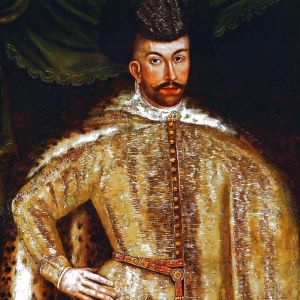
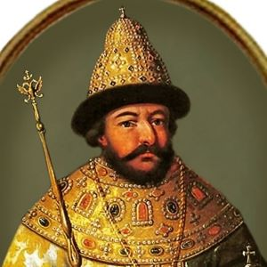
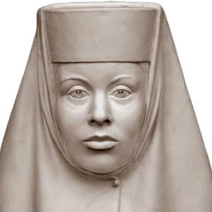
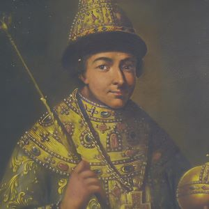
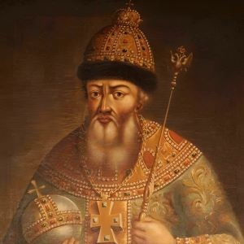

Цари из династии Рюриковичей

Иван IV Грозный
1547 - 1584
- Иван IV Грозный был первым русским царем, правившим с 1547 по 1584 годы.
- Он провел множество реформ, включая создание сословно-представительной монархии и ограничение прав холопов и
крестьян.
- Иван Грозный провел земскую и губную реформы, перераспределив полномочия наместников и волостелей в пользу
выборных представителей.
- Он создал систему приказов и провел знаковую реформу государственной сфрагистики.
- Иван Грозный запретил въезд на территорию России еврейских купцов и провел несколько походов на Казань и
Астрахань.
- В результате походов на Казань и Астрахань, Русское государство достигло внешнеполитического успеха и укрепило
свою власть.

Семён Бекбулатович
1575 - 1576
- Симеон Бекбулатович был касимовским ханом и великим князем всея Руси.
- Иван Грозный использовал "политический маскарад", чтобы сохранить власть.
- Существуют разные версии причин постановки Симеона великим князем всея Руси.
- После смерти царя Фёдора Ивановича, Симеон был лишен титулов и сослан на житьё.
- Симеон обеднел, ослеп и жил в скудости после потери власти.
- Он был похоронен рядом с супругой в Симоновом монастыре.

Фёдор I Иванович
1584 - 1598
- Фёдор Иванович был последним русским царём из династии Рюриковичей.
- Он был сыном Ивана Грозного и Марии Нагой.
- Фёдор Иванович был слабым и болезненным, но обладал добротой и кротостью.
- Он был почитаем православной церковью и считается святым.
- Фёдор Иванович оставил мало следов в истории, но его правление было тихим и праведным.
- Иностранные путешественники и дипломаты часто описывали его как "тихого идиота".
- Память о Фёдоре Ивановиче отмечается в день его преставления и в Соборе Московских святых.
Цари из династии Годуновых

Ирина Годунова
1598
- Ирина Годунова была женой царя Федора Ивановича и сестрой Бориса Годунова.
- Она активно участвовала в агитации за брата перед выборами царя.
- Ирина благословила брата на царство и была похоронена в Вознесенском монастыре московского Кремля.
- Она сделала богатые вклады в Троице-Сергиев монастырь и способствовала распространению двойной иконы "Феодор
Стратилат и великомученица Ирина".
- Имя Ирины и ее мужа увековечено в памятной надписи на стволе Царь-пушки.
- Она стала персонажем романа Юрия Фёдорова "Борис Годунов" и была изображена в телесериале "Годунов".

Борис Годунов
1598 - 1605
- Борис Годунов был избран царем после смерти Федора Иоанновича в 1598 году.
- Вопрос о виновности Бориса в гибели царевича Дмитрия остается дискуссионным.
- Правление Бориса ознаменовалось сближением России с Западом и приглашением иностранцев на службу.
- Царь Борис проявлял подозрительность и сводил личные счеты с боярами.
- Великий голод в России 1601-1603 годов способствовал народным брожениям Смутного времени.
- Годунов пытался помочь голодающим, но его меры не смогли остановить рост цен на хлеб и недовольство населения.

Фёдор II Годунов
1953
- Фёдор II Годунов был сыном Бориса Годунова и наследником престола.
- Он был всесторонне подготовлен к престолу и обладал талантом и образованием.
- Фёдор и его мать стали жертвами преступного властолюбия Бориса Годунова.
- В литературе и искусстве Фёдор Годунов является центральным персонажем в произведениях, связанных с Смутным
временем.
- В музыке и кинематографе Фёдор Годунов также является персонажем различных произведений.
Цари в смутное время

Лжедмитрий I
1605 - 1606
- Лжедмитрий I - самозванец, выдававший себя за царевича Дмитрия, сына Ивана Грозного.
- Существует версия о том, что Лжедмитрий был настоящим царевичем, спасенным и переправленным в Польшу.
- Сторонники этой гипотезы считают, что Дмитрий искренне считал себя царевичем и не боялся разоблачений.
- Существуют аргументы в пользу гипотезы "спасения", включая слухи о том, что был убит мальчик Истомин, а подлинный
Дмитрий спасен.
- Сторонники гипотезы "спасения" считают, что события могли выглядеть так: Дмитрий был подменён и увезен Афанасием
Нагим или в Польшу, где воспитывался иезуитами.
- Противники гипотезы отмечают, что она основана на догадках и не имеет достаточных доказательств.

Василий IV Шуйский
1606 - 1610
- Василий IV Иванович Шуйский был русским царем с 1606 по 1610 годы.
- Он был избран на престол после свержения Лжедмитрия I и восстания в Москве.
- Шуйский был свергнут и пострижен в монахи частью боярства и дворянства.
- Он был пленен польским гетманом Жолкевским и отправлен в Варшаву.
- Василий Шуйский умер в заключении в Гостынинском замке в 1612 году.
- Он был женат дважды, но имел только двух дочерей, которые умерли во младенчестве.
- В искусстве Василий Шуйский является одним из главных действующих лиц трагедии "Борис Годунов".
Цари из династии Романовых
Михаил Фёдорович
1613 - 1645
- Михаил Фёдорович Романов был избран царём России в 1613 году после Смутного времени.
- Его избрание было поддержано Земским собором и представителями разных сословий.
- Михаил Фёдорович столкнулся с противодействием матери, которая не хотела видеть его женой Марии Хлоповой.
- Несмотря на это, Михаил Фёдорович продолжал настаивать на своей избраннице, и после дознания заговор Салтыковых
был раскрыт.
- Царь Михаил Фёдорович был бездетным вдовцом, но нашел новую жену, Евдокию Стрешневу, с которой у него родились
дети.
- Михаил Фёдорович был известен своей политической стабильностью и счастливой семейной жизнью.
- Он скончался в 1645 году от неизвестной болезни, оставив после себя детей и память в культуре.

Алексей Михайлович
1645 - 1676
- Алексей Михайлович правил Россией с 1645 по 1676 годы.
- Он провел военную реформу, создав полки нового строя.
- Алексей Михайлович занимался делами на Украине, включая польскую войну.
- В ходе войны с Польшей, Россия захватила часть Ливонии и заключила невыгодные условия Кардисского мира.
- Гетман Выговский столкнулся с мощной оппозицией и начал нападения на Киев и другие города.
- В результате гражданской войны, победу одержали сторонники союза с Россией.
- Вторая польская война началась из-за отказа Польши признавать Алексея Михайловича наследником престола.

Фёдор III Алексеевич
1676 - 1682
- Фёдор Алексеевич был третьим царём из династии Романовых, правившим с 1676 по 1682 годы.
- Он проводил реформы, включая ликвидацию приказов тайных дел и монастырского приказа.
- Введено подворное обложение прямыми налогами и создана система канализации Кремля.
- Царь Фёдор Алексеевич был широко образованным человеком и стал одним из создателей греко-славянского Типографского
училища.
- Продолжилось строительство засечных черт и начато строительство Инсарско-Пензенской, Пензенско-Сызранской и
Изюмской черт.
- Царь взял себе в жёны польскую Агафью Грушецкую, что привело к ослаблению позиций Милославских и усилению
Долгоруких и Хитрово.

Пётр I Великий
1682 - 1721
- Петр I стал царем в 1682 году, получив поддержку стрельцов.
- Он провел реформы, направленные на модернизацию России и усиление ее военной мощи.
- Петр I продолжил войну с Османской империей и Крымом, начав с Азовских походов.
- Великое посольство 1697-1698 годов было направлено на поиск союзников против Османской империи.
- Петр I изучал кораблестроение, военное дело и другие науки во время своего путешествия по Европе.
- После возвращения из Великого посольства началась преобразовательная деятельность Петра, направленная на изменение
внешних признаков и создание новой системы образования.
- Петр ввел празднование Нового Года 1 января и ввел изменения в календарь.
- Военные реформы Петра привели к созданию Российской империи и усилению военной мощи страны.